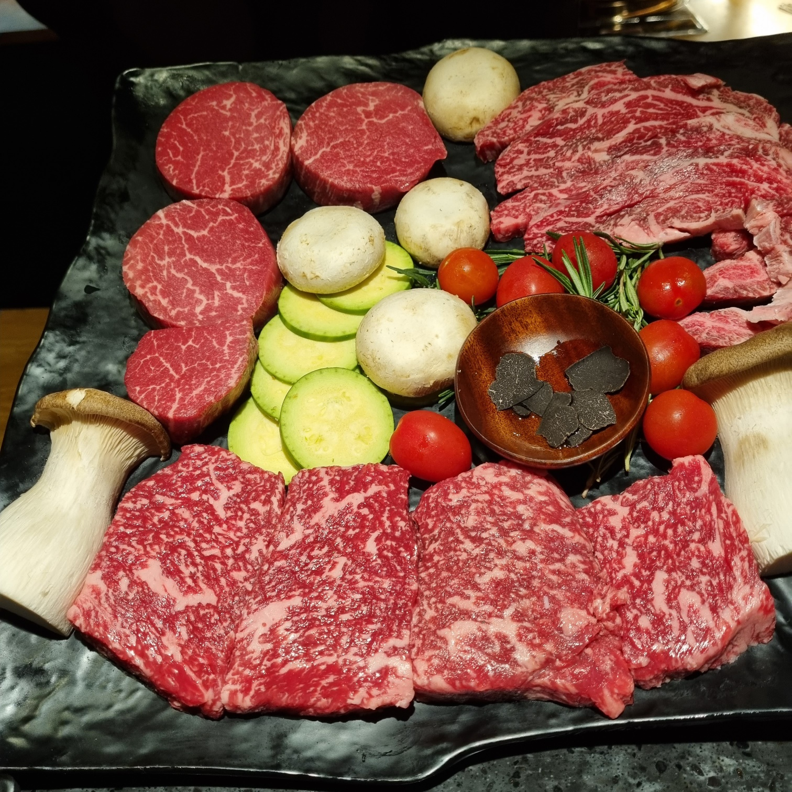
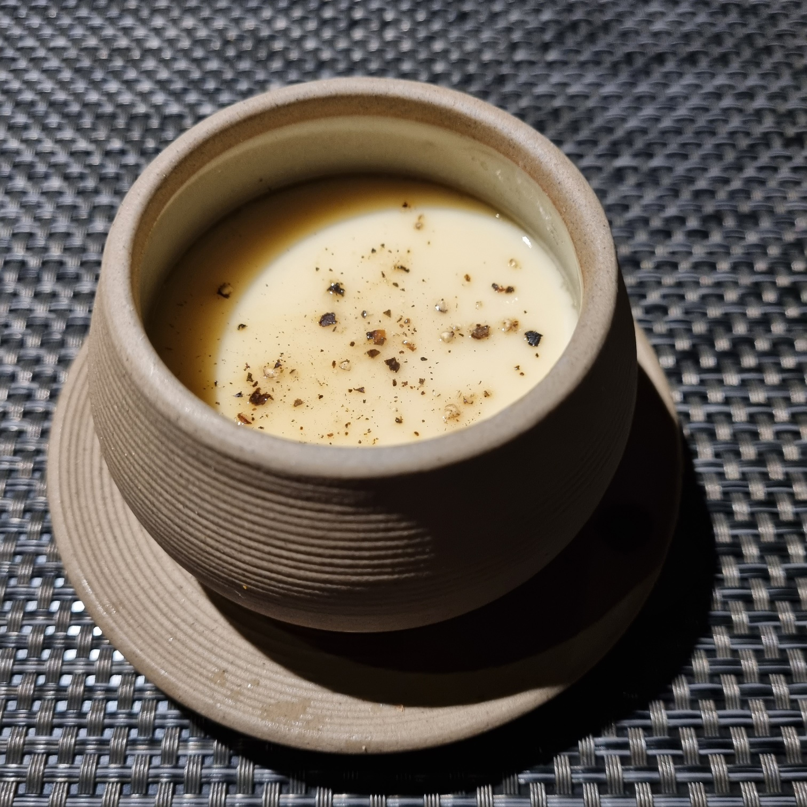
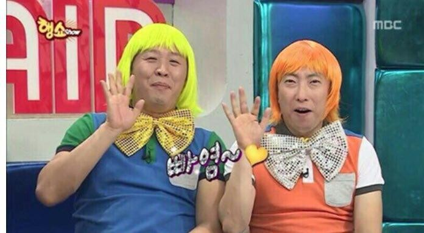

우정담 방문 후기
2023년 3월 25일. 준이와 1,000일 되던 날.
대구에서 가장 훌륭한 한우 오마카세 우정담을 방문했다.
아래는 후원해주신 최사장님께 드리는 상세한 후기이다.
<0. 우정담 입성>
- 인생 첫 우마카세 우정담 -
준이와의 1,000일.
꽃을 선물하고, 오랜만에 함께 사진을 찍고, 운 좋게 마술 공연까지 보는 등 행복한 하루를 보내고 있었다.
하지만 이날의 메인 이벤트는 따로 있었다.
바로 한우 오마카세 전문식당인 우정담.
'우리도 오마카세에 가보자.'
준이와 그런 얘기를 주고 받은 적이 있다. 그러나 한참 뒤의 이야기라고만 생각했다. 취업하고 자리를 잡은 뒤쯤? 당장의 형편에는 지나친 사치였으니까.
한데 생각지도 못했던 타이밍에 그 오마카세를 갈 수 있게 됐으니... 행복지수는 당연히 만땅. 평소 공복을 힘들어하는 준이도 괜히 입을 오염시키지 않겠다며 쫄쫄 굶으며 버틸 정도였다.
물론 나도 그랬고.
시간이 흘러 오후 8시.
마침내 우정담에 입성했다.
내부는 드라마에서 보던 칵테일 바를 연상케 했다. 바(bar) 형태의 테이블에 붙어 앉는 식이었지만 다른 팀과 거리가 충분해 비좁다는 느낌은 없었다. 천장이 굉장히 높은 덕분에 공간이 더
넓어보이기도 했고.
입장과 동시에 쉐프 분이 우리를 맞이하러 나왔다. 옷을 받아준 뒤 손수 의자를 밀어주었는데 이때 난 내가 너무 무거워서 잘 안 밀리면 어쩌나 걱정했었다.
다행히도 그분의 근력은 충분했고 자리에 앉은 나는 본격적으로 주위를 둘러보았다. 사진을 보자.

[전체적으로 차분한 느낌의 식기.]
일단 첫인상은 좋았다.
보다시피 테이블 매트와 식기 받침, 물수건의 색상이 대리석 식탁과 잘 어울렸기 때문이다. 이런 디테일에 신경을 쓰는 가게라면 음식도 기대할만했다. 입장부터 설레던 마음이 한층 더 들뜨는
순간이었다.

[삼다수보다 백 배는 근사했던 생수.]
심지어 생수병조차 근사했다. 집밥을 먹을 때조차 겉치장에 집착하는 나로서는 즐거울 수밖에 없었다.
그뿐만이 아니었다.

[와인잔에 적힌 문구를 보라.]
아주 기특한 이벤트가 기다리고 있었다.
와인잔에 기념일을 축하하는 문구가 적혀 있던 것. 참고로 이날 우정담에는 우리를 포함하여 5팀이 있었는데 와인잔에 이렇게 무언가를 해둔 건 우리뿐이었다. 뭔가 특별한 주인공이 된 느낌이라
기분이 좋았다.
감동한 준이의 눈망울이 금새 촉촉해졌다... 라고 하고 싶지만 사실 그정도까지는 아니었다. 좋아하기는 했지만 그보다는 음식에 대한 기대로 충만해보였으니. 사실 이런 건 내 취향이라...
내가 더
울컥했다.
하지만 모든 게 완벽할 수는 없는 것일까?
흡족했던 마음에 아쉬움을 새긴 사건이 발생했다.
바로 물수건이 얼음처럼 차가웠던 것.

[디테일이 없다 아입니까.]
아니, 도대체 왜?
나로서는 이해가 되질 않았다. 당시 바깥 날씨는 쌀쌀한 편이었다. 이런 센스 있는 가게라면 물수건 정도는 당연히 데워줬을 거라고 짐작했는데 틀린 것이다.
어려운 일이었다면 실망도 안 한다. 전자레인지에 30초만 돌리면 되는 간단한 일이건만... 나나 재미 같았으면 무조건 신경썼을 부분인데... 디테일에 불신이 들자 음식에 대한 걱정까지
생길 정도였다. 설마 음식도 차갑게 나오나? 하는 불안까지 들었으니.
여담으로 당시 준이는 실망한 기색이 아니었다. 그 이유를 최근에 알게 됐다. 따뜻한 물수건보다는 차가운 물수건이 좀 더 깨끗한 느낌이 든다고. 고개가 끄덕여지는 의견이긴 했지만 과연
우정담이 그걸 노렸을까?
지금도 그렇지만 그때는 더더욱 그렇게 생각하지 않았던 나는 그저 아쉬운 표정으로 젓가락을 들었다.
바로 그때였다.
축구선수 조규성을 닮은 쉐프 분이 다가와 오늘 코스는 1시간 30분 가량 진행될 예정이라고 안내했다.
그리고 대망의 고기를 들어보여줬는데.

[1++ 등급만 사용한다고 했던 것 같다.]
영롱한 자태에 입꼬리가 절로 올라갔다.
빛깔도 훌륭했지만 고기의 양이 많아 더 놀랬다. 이렇게 혜자라고? 준이도 놀란 얼굴이었다. 사실 나중에 알고 봤더니 저 한 접시로 두 팀이 나눠먹는 거더라. 그때는 약간 김이 샜지만...
어쨌든 마블링이 작살난다는 것만은 변함없었다.

[근접사진은 없다. 확대하라.]
이어서 쉐프가 준비된 사이드들을 설명해줬다.
왼쪽부터 레몬 소금, 깻잎 페스토, 그냥 소금, 와사비, 궁채 장아찌, 백김치, 명이나물이라고.
배가 고팠던 나는 냉큼 백김치 하나를 집어 먹었다. 그런데... 흠. 시원하고 아삭아삭한 것이 내 입맛에 딱 맞았다. 내친김에 깻잎 페스토와 레몬 소금, 명이나물까지 먹어봤는데 전체적으로
지나치게 강하지는 않으면서도 입맛을 자극했다. 물수건 사건으로 살짝 내려갔던 기대감이 다시 올라가기 시작했다.
그때 때마침 우정담의 첫 요리가 등장했다.

[에피타이저인 계란찜. 영롱한 자태가 보이는가.]
우정담이 선보인 첫 요리이자 에피타이저는 계란찜. 정확히는 일본식 계란찜이라고 소개받았다. 그래서인지 평소 먹는 계란찜보다 훨씬 부드러웠다!
찜 자체의 맛은 이유식이나 죽이 떠오를 정도로 순하다. 그러나 살짝 더해진 후추가 적절한 자극을 줬다.
그래서 제 점수는요...? 일단 9점.
왜냐? 나는 플레이팅을 중요하게 생각하는 사람이라 그릇에서 가산점을 팍팍 줬다. 덕분에 고오급 식당에서 밥을 먹고 있다는 게 실감이 확 됐으니까.
간도 에피타이저로 딱 좋은 정도라서 지적할 부분이 없었다. 그런데도 1점을 뺀 이유는 나중에.
준이의 평가 :
쉐프가 소고기 육수를 썼다고 말했는데, 그래서인지 감칠맛이 쩔고 비리지도 않았음. 존맛탱!
<3. 육회와 노른자 튀김>
- 노른자를 튀길 수가 있구나 -
계란찜을 먹고 나니 배가 확 고파지면서 식욕이 솟구쳤다. 다행히 우정담의 쉐프들도 그걸 아는지 큰 텀 없이 다음 요리를 가져다주었다.
두 번째 요리.
오른쪽이 육회라는 건 누구나 알 테고. 왼쪽의 노란 공의 정체가 무엇인고 하면, 노른자 튀김 되시겠다. 계란 노른자에 빵가루를 입혀 튀겨냈다고.
여기서 놀라운 점은 겉부부만 튀긴 것이고 내부의 노른자 자체는 익지 않아 흘러내리는 상태라는 것! 튀김의 고소함을 즐기는 동시에 전통적인 방식처럼 노른자에 육회를 찍어먹을 수도
있었다. 맛은 말해 뭐하겠나.
이번에도 내 점수는 9점.
역시 1점을 뺀 이유는 나중에 설명한다.
<4. 첫 번째 메인 - 안심 구이>
- 당근이세요? -
아쉽게도 사진이 없는데, 육회를 다 먹을 때쯤부터 쉐프가 고기를 굽기 시작했다. 계란찜과 육회. 두 에피타이저만으로도 우정담의 클라스를 느낀 터라 기대감이 무럭무럭 솟았다.그리고
잠시 후 등장한 메인 요리는...
부위는 안심. 굽기는 미디엄 레어(쉐프 추천 굽기). 가니쉬로는 특제 소스와 새송이 버섯 구이.
맛을 뭐라고 설명하면 좋을까?
순서를 세어보자. 백김치 등 사이드들이 첫 번째. 계란찜이 두 번째. 육회가 세 번째. 그러면 이번에 나온 안심 구이가 네 번째 순서가 된다. 네 번째는 뭐다?
홈런 타자라는 말이다.
앞서 나온 요리들이 기대감을 착실히 쌓으며 베이스를 밟았다면, 이 안심 구이는 홈런을 쏴올리며 쾌감을 폭발시켰다. 하... 부드러운 고기를 씹는 순간 고소한 맛이 터지는데 기름기가
지나치지도 모자라지도 않고 딱 좋았다. 그리고 여기서 특제 소스가 등장한다.
당근과 양파를 갈아서 만들었다는 저 노란 소스가 정말이지 충격이었다. 당근과 양파를 가지고 어떻게 이런 맛을 낼 수 있었을까? 정신차려보니 나는 접시를
긁어가며 소스를 몽땅 해치운 뒤였다. 이어 고소하고 향긋한 새송이 버섯 구이를 맛본 뒤에.
'고기가 나올 때쯤' 준비해달라고 요청해놓았던 하이볼과 하우스 와인을 받아 마시자 천국이 따로 없었다.
평점은 깔끔하게 10점이다.
앞서 등장한 에피타이저들이 9점을 받았던 것은 전부 이 메인 요리 때문이었다. 태양이 하나이듯 10점도 오직 하나뿐이어야 하니까. 언젠가 꼭 다시 먹고싶다.
<5. 토마토 카프레제>
- 느끼함을 씻어준 샐러드 -
뒤이은 요리는 토마토 카프레제. 토마토와 바질 잎, 모짜렐라 치즈를 꿰어놓은 꼬치에 엑스트라버진 올리브유를 뿌려서 만들었단다. 특별히 엄청난 맛이 느껴진 것은 아니었으나 소고기의 느끼함을
잡아주었다.
따로 점수를 매기기에는 애매해서 생략한다.
<6. 두 번째 메인 - 채끝과 새우살>
- 혀 이전에 눈이 즐거웠던 메인 요리. -
카프레제로 입가심한 뒤 받은 두 번째 메인 요리는 채끝과 새우살 구이였다. 가니쉬로는 콜리플라워를 갈아 만든 소스, 애호박, 양송이 버섯, 트러플, 토마토, 마지막은
금가루였다.
채끝과 새우살의 맛 자체는 9점. 아무래도 안심에 비해서는 질겼고 고소한 맛도 덜했다.
하지만 눈바디로는 1등이라고 본다. 우마카세란 이런 것이다! 라고 주장하는 듯 멋스럽게 쌓아둔 고기 위에 솔솔 뿌려놓은 금가루라니. 당시 난 살다살다 금을 다 먹어본다며
준이에게 호들갑을 떨었다. 내가 만약 인스타를 했다면 이놈 사진을 메인에 걸었지 싶다.
어쩔 수 없는 소고기의 숙명일까...? 두 번째 메인까지 먹고 나자 속이 조금 느끼했다. 특히나 이때쯤의 난 극심한 느끼병에 걸려있던 상황. 이대로라면 느끼함을 잡으려다 하이볼로 물배를
채워버릴 위기였는데.
과연 배운 사람들은 달랐다.
때마침 등장한 김치말이국수에 우리는 신의 한수라며 물개박수를 쳤다. 지금 다시 생각해도 정말이지 완벽한 타이밍. 더 놀라웠던 것은 그 맛 자체였다. 농담이 아니라 이것만
가지고 장사를 해도 되겠다 싶을 정도로 일품이었다. 일단 나는 9.5점을 주겠다ㅜ
<8. 안심 추리>
- 먹을 복이 터졌다. -
나는 김치말이국수가 나온다는 것 자체는 미리 알고 있었다. 앞선 모든 요리들도 마찬가지다. 아무래도 후기를 읽고 왔었으니까... 맛에는 놀랐지만 아예 메뉴 자체를 모르고 있던 준이보다는
놀라움이 덜했다.
그런데...?
난데없이 모르는 놈이 나타났다.
정체는 안심 추리살 구이.
쉐프가 말하길 이건 해당 부위가 있을 때만 손님들에게 서비스 격으로 내놓는 요리랬다. 우리는 운 좋게 행운의 주인공이 된 것이었다.
구성은 구운 안심 추리살과 간장 계열 양념으로 절인 양송이 버섯, 눈꽃처럼 흰 치즈였다.
맛은 어디서부터 말해야 할지 모르겠다. 일단 내가 먹어본 것중에 가장 훌륭한 버섯이었으며 고기의 맛도 상상 이상으로 훌륭했다.
하지만 감히 이번 요리의 주인공을 꼽자면 고기도 버섯도 아닌 저 치즈였다. 첫입에 빠져버린 나는 이번에도 접시를 긁었다. 얼마나 맛있었으면 쉐프에게
치즈 이름을 물어봤다. 이후 그 치즈를 구매해 지금까지 먹고 있는데... 곧 맛을 보여줄 예정이니 자세한 이야기는 그때. 지금은 9.5점을 매기고 넘어간다.
깜짝 선물같던 서비스에 이어서 나온 카츠 산도(규카츠 산도라고 해야하나?). 준이도 나도 카츠 산도 자체를 별로 좋아하지 않는 편이라 이제껏 나온 요리 중에서는 가장
아래였다.
다만 함께 나온 소스만큼은 반가웠는데, 내가 캐나다에서부터 푹 빠진 스리라차 마요(스리라차 + 마요네즈)였다. 단골 피자집에서 주길래 반가웠는데 우정담에서까지 등장한 걸 보니 곧 대세가
될 모양이다.
아무튼 소스를 제외하고는 전체적으로 무난했던 카츠 산도는 8.5점을 매겨놓고 다음으로 넘어간다.
어느덧 마지막 요리다.
<10. 솥밥과 소고기국>
- 맛과 양을 한번에 잡다. -
지금까지 이것저것 먹었어도 포만감이 들 정도는 아니었는데, 이어서 나온 요리가 가려운 곳을 긁어줬다.
요리의 정체는 밥과 명란, 버섯을 볶아낸 솥밥과 한우 등심이 들어간 소고기국... 다시 봐도 진짜 미쳤다.
나는 볶음밥에 명란이 들어가서 비릴 줄 알았는데 전혀 그런 것 없이 고소하기만 했다.
소고기국은 더 예술이었다. 국물 맛 자체도 대정옥 등 전문 한우국밥집 못지 않았는데 안에 들어간 한우 등심이 정말 예술이었다. 얼마나 푹 끓였는지 어어어엄청 부드러워서 입에서 살살 녹았다ㅜ
평점은 9.9!!!
맛도 맛인데 배까지 든든하게 채워줘서 단 한 점의 아쉬움도 없이 식사를 마칠 수 있었다.
<11. 도라지차와 아이스크림>
- 아름다운 마무리. -
마지막 디저트는 아이스크림과 도라지차. 딱 좋은 메뉴였다고 생각한다. 아이스크림보다는 도라지차의 맛이 좋았다고 기억 중. 이번엔 점수는 매기지 않겠다.
이로써 우정담에서의 식사가 끝났다.
종합적인 소감은 정말 멋진 선물이었다는 것. 앞으로도 인생 최고의 식사 중 하나로 꼽힐 것 같다.
이로써 한우 오마카세 우정담의 방문 후기를 마무리하겠다. 쓰고 싶은 얘기야 더 있지만 빨리 후기를 보여주고 싶기도 하고, 해봐야 민망해할 것 같기 때문에... ㅎㅎ
아무튼 다시 한번 멋진 선물(심지어 귀이개보다)에 감사한 마음 전한다. 덕분에 잘 다녀왔습니다...! 나중에 돈 많이 벌면 꼭 더 맛있는 곳에 보내줄게.
그럼 이만 뿅. 이제 공부하세요.
